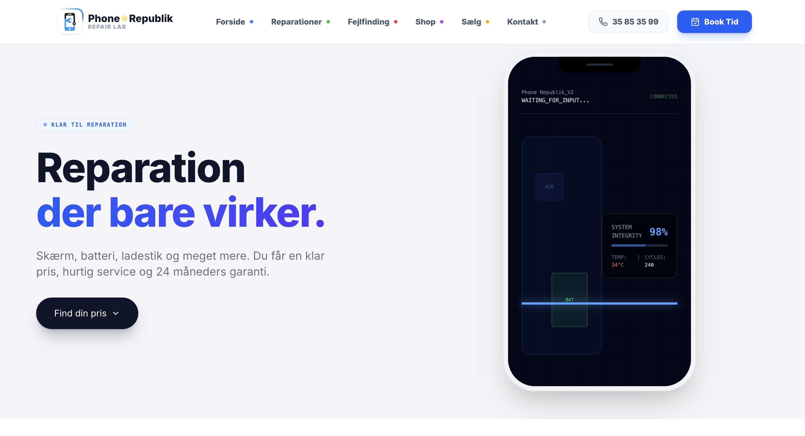
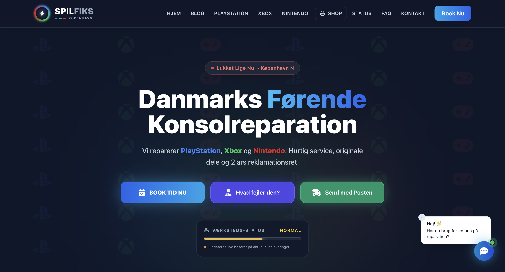

03
Udvalgte Projekter

Phone Republik
Digital serviceplatform skabt til at forene teknisk ekspertise med en intuitiv brugeroplevelse. Jeg har designet og udviklet en responsiv løsning, der optimerer kunderejsen fra prissøgning til booking af reparation.
Besøg hjemmesiden →

L'ancora
En komplet digital rejse fra visuelt koncept til færdig WordPress-løsning. Fokus har været på at skabe en lynhurtig, mobiloptimeret hjemmeside, der formidler restaurantens atmosfære og gør menuen let tilgængelig.
Besøg hjemmesiden →

Spil Fiks
Gennemarbejdet UX-case og prototype for en reparationsplatform dedikeret til spillekonsoller som PS5, Xbox og Nintendo. Hjemmesiden fokuserer på at gøre fejlfinding og bookingprocessen intuitiv for gamere gennem et moderne, mørkt interface.
Besøg hjemmesiden →